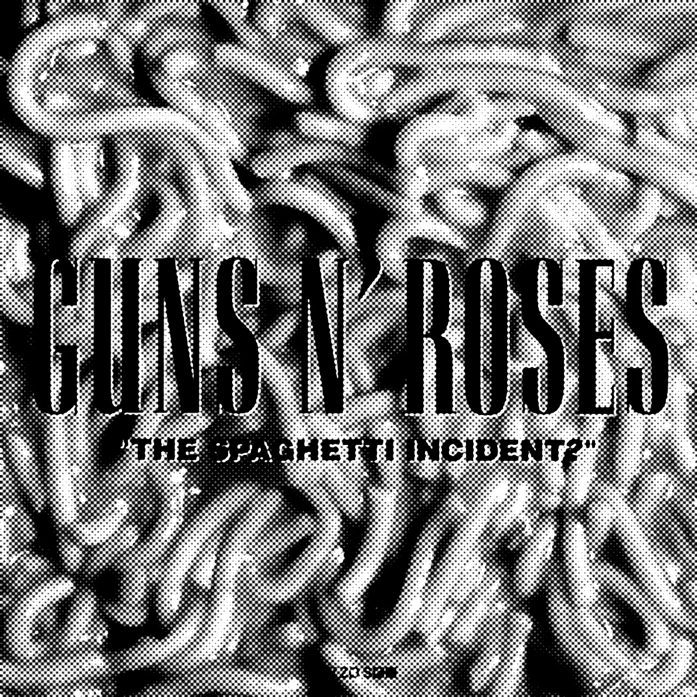
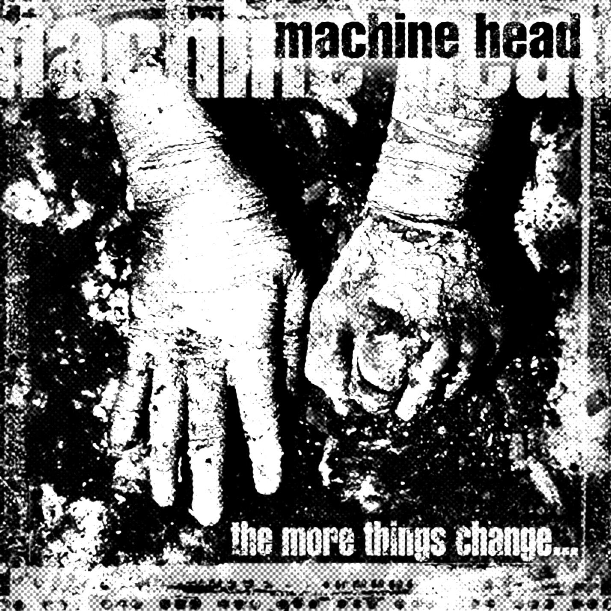
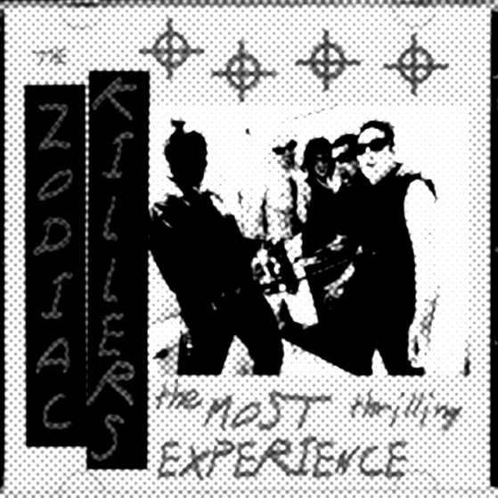
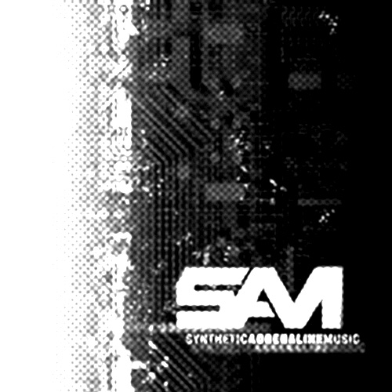
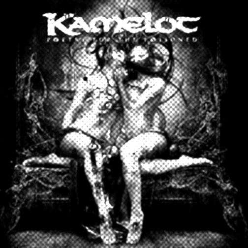
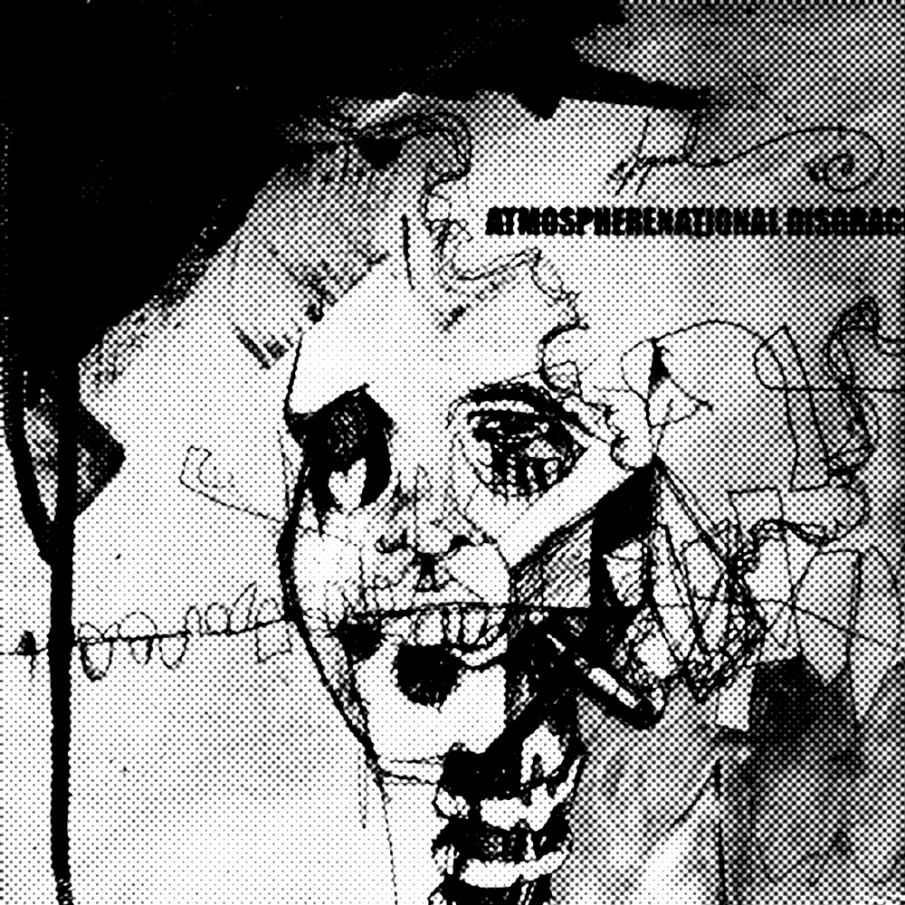
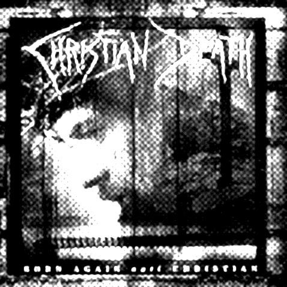
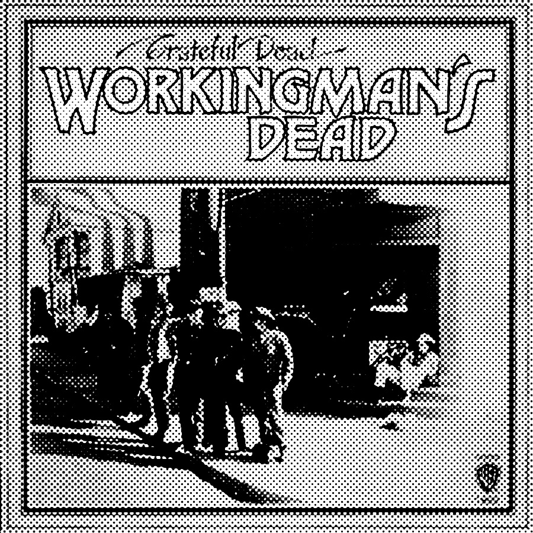

The death metal band Macabre's album "Sinister Slaughter", from 1993, features a song entitled "Zodiac", about the killer.[6]

The bottom of the cover art of Guns N' Roses' album "The Spaghetti Incident?", from 1993, contains a code using the killer's symbols, which has been deciphered as "fuck'em all".[7]

San Francisco metal band Machine Head's 1997 album The More Things Change... features "Blood of the Zodiac", inspired by the Zodiac killer.

The Zodiac Killers, a San Francisco based Punk Rock band has drawn imagery and words from the killer for the albums "The Most Thrilling Experience" "Have a Blast", and "Society's Offenders".

German EBM band SAM 2008 album "Synthetic Adrenaline Music" features a track called "Zodiac Killer".

Kamelot's album Poetry for the Poisoned, from 2010, features two songs, "Dear Editor" and "The Zodiac", about the Zodiac Killer.[8]

The song "National Disgrace" by Atmosphere contains a reference to The Zodiac Killer.

American deathrock band Christian Death's 2000 album Born-Again Antichristian features a track called "Zodiac (He Is Still Out There...)", about the Zodiac Killer.

The Grateful Dead song "Dire Wolf", from 1969, contains the refrain "I beg of you, don't murder me..." which was inspired by the air of paranoia that settled over the San Francisco area during the Zodiac murders.